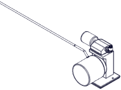
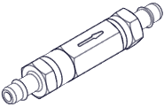
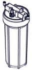
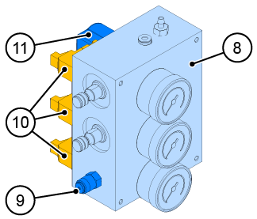
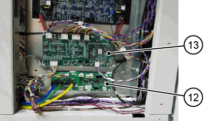

Operating Principles for the Pneumatics System
This topic includes information about the theory of operation, or operating principles, for the pneumatics system.
| Table of Contents |
|---|
| Function |
| Location |
| Operational Overview |
| Component Locations and Functions |
| Component and Interaction Block Diagram |
| Interacting and Intersecting Devices |
Function
The pneumatics system on the instrument functions to supply air pressure to drive the various pneumatic components throughout the instrument. The pneumatics system distributes three different pressures throughout the instrument; 12psi, 20 psi, and 32-35 psi.
Location
The pneumatics module is located at the right rear of the instrument, including the compressor, regulators, gauges, and accumulator jar. The pneumatic tubing carries air pressure throughout the instrument for distribution to other subsystems and devices.
Operational Overview
The pneumatic system operation includes distribution of air pressure as described below:
- Air is supplied to the accumulator from the shuttle valve at approximately 32-35 PSI from one of two methods:
- The house air inlet which passes through an air filter and then the primary regulator, setting the pressure to approximately 35 PSI.
- The on-board compressor which cycles as needed to maintain pressure of approximately 35 PSI, featuring a check valve downstream to prevent back pressure form preventing the compressor cycling.
- The accumulator distributes air to six (6) different locations, including:
- Pneumatics manifold (RED tubing)
- Air Supply Sensor - monitored by the pneumatics interface printed circuit board (PCB) to maintain adequate accumulator pressure.
- 12 PSI Regulator - monitored by the 12 PSI sensor (allowable range 9-15 PSI), distributes 12 PSI to the Sample, Incubator, and Analytical PnP valves (ejectors). BLUE tubing.
- 20 PSI Regulator - monitored by the 20 PSI sensor (allowable range 17-23 PSI), distributes 20 PSI to the bulk feeder valve (ejector). GREEN tubing.
- 40 PSI Pressure Relief Valve - vents to atmosphere in case of excessive pressure.
- Condensate Purge Valve - periodically cycles open to drain condensation from the accumulator into the solid waste bin.
- When the Air Supply Sensor detects insufficient pressure from the accumulator (<32 PSI for two consecutive readings, 1 second apart), the compressor is enabled (turned on) and builds pressure until reaching ≥35 PSI (single average reading).
- If the compressor is enabled and pressure does not achieve 32 PSI within 60 seconds, a system error is generated and the instrument will stop running. Failure to reach 32 PSI within 60 seconds is typically due to a compressor failure, or an air leak in the system.
- The duty cycle is logged as a rolling average of the past 288 seconds, measured every second, as a ratio of the compressor "ON" time to total time (expressed in a percentage rounded to the nearest whole number). Example: Compressor ON 88 seconds, OFF 200 seconds = 31% duty cycle.
Component Locations and Functions

|

|

|
| 1 | 2 | 3 |
 |

|
 |
| 4 | 5 | 6 |
 |
 |
|
| 7 | ||

| # | Component | Description and Function |
|---|---|---|
| 1 | Bulkhead Fitting | Accepts house air supply and transfers it across the outer skin to the interior of the instrument (to Air Filter) |
| 2 | Air Filter | Filters house air |
| 3 | Primary Regulator | Accepts house air (up to 150PSI) and regulates it to 35PSI |
| 4 | Compressor | Generates compressed air when house air is not available |
| 5 | Shuttle Valve | Passive mechanical valve which selects the highest available air supply source and supplies it to the accumulator |
| 6 | Check Valve | One way valve to prevent back-flow through the compressor |
| 7 | Accumulator | Air supply reserve to reduce pressure drop during transient events |
| 8 | Manifold | Distributes air supply to the 3 branches. Reduces supply pressure (32-35PSI) to 20PSI for Bulk Feeder and 12PSI for Pick and Places |
| 9 | Pressure Relief Valve | Relief valve which vents excess pressure, fixed at 40PSI |
| 10 | Shutoff Valves | Shuts off air supply to each of the three branches. |
| 11 | Liquid Relief Valve | Used to drain condensate from the accumulator. Air pressure is used to propel water through the drain tube |
| 12 | Pneumatics Interface PCB | Contains all 4 pressure sensors. Power source for compressor |
| 13 | Data Acquisition (DAQC) PCB | Data Acquisition board which collects and reports pressure data from pneumatics interface board |
Component and Interaction Block Diagram
For a detailed illustration of components and interactions, see the DxI9000 Pneumatics Block Diagram.
Interacting and Intersecting Devices
- Sample PnP (Ejector Valve)
- Incubator Pnp (Ejector Valve)
- Analytical PnP (Ejector Valve)
- Bulk Vessel Feeder (Ejector)
- Reagent Storage (Gripper, and Waste Door)
- Wash Wheel (Eject Arm Valve)
- Solid Waste (accepts condensate from the accumulator)